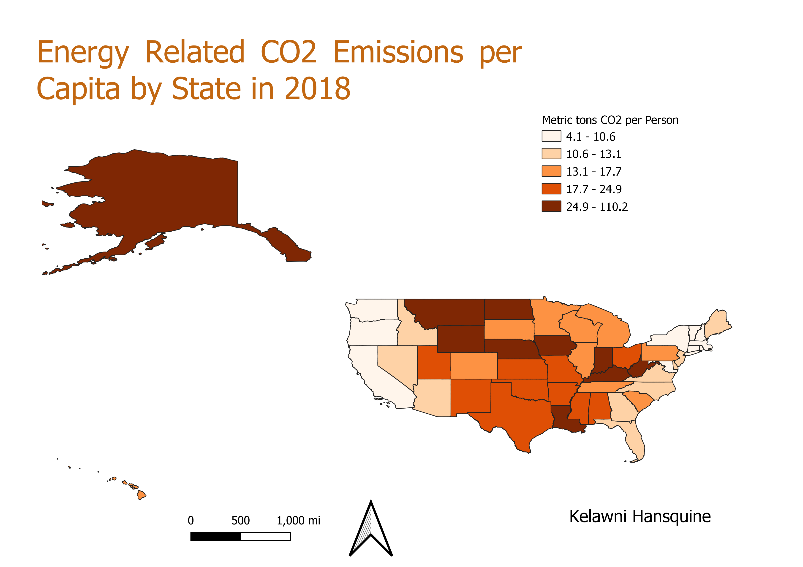

Homework 9: Make a choropleth or proportional symbol map from vector data and a csv that you cleaned and joined
Kelawni Hansquine
This map depicts CO2 energy related emissions per capita by state in the US in 2018 using equal count breaks.
According to the data, the highest CO2 emissions per capita are in mid-Northern US, mid-Southern US, and Alaska, while the
lowest CO2 emissions per capita are in the western and northeastern parts of the country.
I chose to use this topic because I have an interest in reduction of GHG emissions, of which the primary source is energy
production and consumption. I wanted to see which states were the most and least energy efficient.

Data Used for this Project
Cleaned Emissions Per Capita Data
Data Source
US Vector Layer